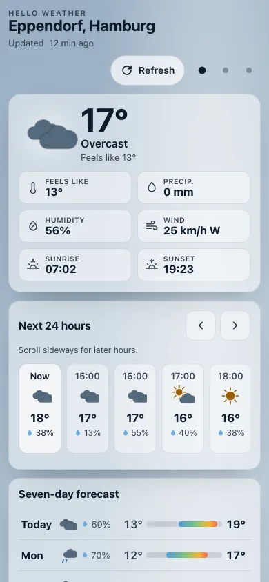
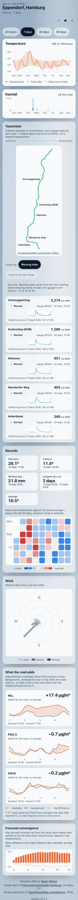
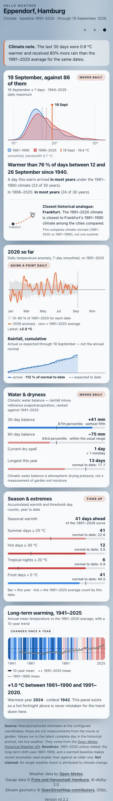
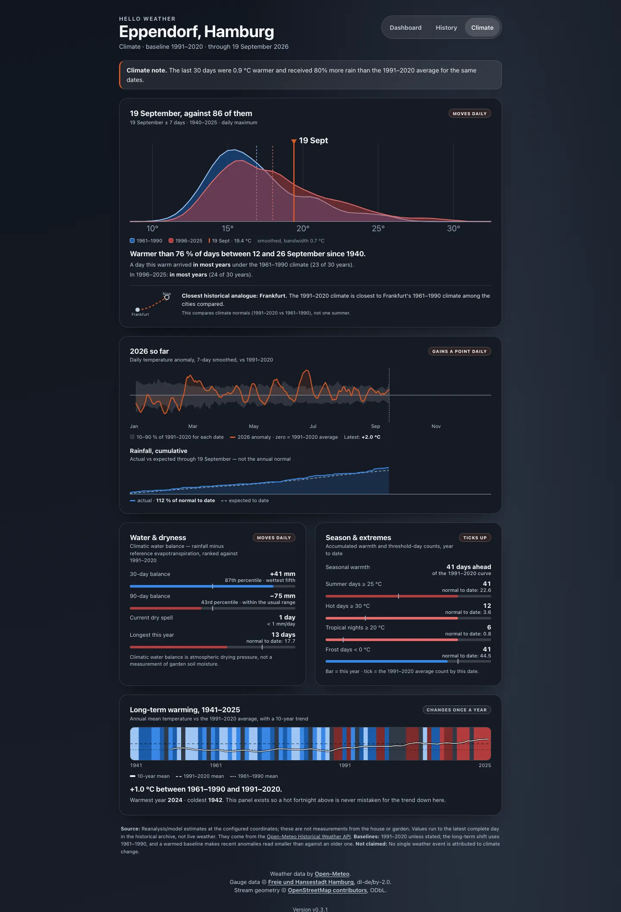

Hello Weather
A weather dashboard for one place: Eppendorf, in Hamburg.
It shows the forecast, the level of the small river that runs through the district, the air quality at nearby measuring stations, and how this year's weather compares with the eighty-six years before it.
It runs on a NAS in a flat, for one household. There is nothing here to sign up for and nothing to install. This page explains what it does — and, in the second half, where every number on it comes from.
The screenshots below are whole pages, captured on 22 September 2026. Every figure in them is a value from that moment, not a live reading: the app is not reachable from the internet.
Dashboard
Current conditions first: temperature, what it feels like, precipitation, humidity, wind, and the day's sunrise and sunset. Then the next twenty-four hours, then seven days.
Below those, the Tarpenbek card lists five gauges from Schmuggelstieg down to Kellerbleek, each with its level in centimetres above sea level and how far it has moved over six, twelve and twenty-four hours. The air-quality card follows, with Hamburg's official index and the individual pollutants behind it.
The background is painted from the current weather and time of day — a clear morning here — and the browser's own interface colour follows it. The view works from the keyboard, honours reduced-motion settings, and its light and dark palettes are contrast-tested rather than eyeballed.


History
Four ranges — twenty-four hours, seven days, thirty days, sixty days. The short ranges draw every hour; the long ones draw daily aggregates computed in the database.
Each block states its own coverage rather than quietly drawing whatever it has. "168 of 168 hours" means the week is complete, and each gauge says how long it has been collecting. Days missing hours stay visible but are excluded from records, and daily buckets handle the 23- and 25-hour days that clock changes produce.
Below the charts: the Tarpenbek drawn as a stream with its gauges in order, a records card, a wind rose over sixteen sectors, a panel subtracting the urban background station from the roadside one to isolate what the traffic itself adds, and the forecast convergence chart.


Climate
Five panels, each moving at its own pace. This day against its record redraws daily. This year so far gains a point a day. Water & dryness and Season & extremes track the running year. Long-term warming changes once a year.
The archive behind them reaches back to 1940, which is what makes the first panel possible: today's temperature is placed inside the distribution of every comparable day since then, rather than compared with a single date last year.
The page ends with its own disclosure — that these are model estimates at the configured coordinates rather than measurements from the house or garden, which baselines are in use, and that no single weather event is attributed to climate change.
![The whole climate view for 21 September 2026: a note that the last 30 days were 1.1 degrees warmer and 93 percent wetter than the 1991 to 2020 average; a distribution comparing 1961-1990 with 1996-2025 and the day marked at 16.6 degrees, warmer than 50 percent of days between 14 and 28 September since 1940, with Frankfurt named the closest historical analogue; a 2026 anomaly chart and cumulative rainfall at 113 percent of normal to date; water balance and season extremes cards showing 12 hot days against a normal of 3.6; and a long-term warming panel for 1941 to 2025 reading plus 1.0 degrees between 1961-1990 and 1991-2020.](assets/shots/climate-desktop-sunny.webp)


When data is missing or late
Providers time out, gauges stop reporting, and the climate archive runs behind. What the app does in each case:
- The forecast provider is unreachable The last stored reading is shown with its timestamp and a banner saying how old it is. If nothing usable is stored, the API returns 503.
- No gauge reading near the comparison time A 6, 12 or 24-hour change needs a stored reading within 30 minutes of the target time. Without one, the change field is empty.
- A gauge has little history The normalised level scale needs readings from 14 separate days at that gauge. Until then the raw centimetre height is shown on its own.
- One source fails Gauge, air-quality and climate failures are isolated from each other and from the forecast.
- Logging and caching Coordinates, the address, query strings, client addresses and request headers are excluded from logs and cache keys.
The app is FastAPI serving both the JSON API and the built single-page app, React and TypeScript in the browser, PostgreSQL for history, Redis as a short-lived cache and task broker, one background worker and one scheduler, running as a Docker Compose project on a NAS at home. Stream geometry is generated offline from public data and committed as static values, so nothing about geography is fetched at runtime.
Rivers
The Tarpenbek is a small watercourse, a few metres across, that runs through the district and feeds into the Alster. Hamburg's flood warning service publishes water levels for gauges along it1, and the app reads them every fifteen minutes, keeping every measurement rather than only the latest one.
Five gauges are shown in upstream-to-downstream order. Each keeps its own scale, because the published figures are heights above sea level in centimetres: one gauge's number compared with another's tells you nothing. What is comparable is a gauge against itself, over time.
How a level change is calculated
The app shows how much each gauge has moved over six, twelve and twenty-four hours. That change is the latest reading minus an actual stored reading from around the target time — within half an hour of it, and no further. When two readings are equally close, the later one wins.
If no reading exists inside that window, there is no change. The app does not interpolate between the readings on either side to produce a number. On a small stream that can rise quickly after rain, an interpolated level is a guess wearing the clothes of a measurement, and a guess is exactly what someone looking at a flood gauge does not want.
When the colour scale becomes available
The stream diagram can be coloured by how high each gauge is running, which requires knowing what normal looks like there. The app builds that from the gauge's own history: the fifth and ninety-fifth percentiles of everything it has stored, with the current level placed between them.
That only switches on after a gauge has readings from fourteen separate days, and only if those two percentiles actually differ. Before then the colour scale is absent and the raw centimetre reading stands alone. A normalised scale built on two days of data would look authoritative and mean nothing. Warning levels, which come from the source rather than from accumulated history, are available from the first day.
The history screenshot above happens to catch this mid-way. The gauges have been collecting since 15 September, and the panel says so in as many words: level colouring needs fourteen days of a gauge's own history, and ten of fourteen have accumulated. The control for it is visible and inert, rather than hidden or quietly showing an invented scale.
Where the map data comes from
The stream drawn on the history page is not a map tile and not a live query. It is generated offline from two public inputs — OpenStreetMap ways named Tarpenbek3 and the coordinates in Hamburg's gauge archive — projected, joined, checked for ordering, and committed as static values. At runtime the app fetches no tiles, loads no mapping library, and makes no geographic request at all.
Verifying that archive download produced an awkward result. The file that was downloaded and used hashes to one value. Hamburg's own catalogue metadata lists a different one for that resource:
a2f83f7711a59c8ef13fcc74988a52938f2cb51ea49e0002da1971e3859a80d6
7a63e4f829762ec0a65c42d9e94442d3dc94440299890cab798874f8b3146865
Both are recorded, and neither is presented as the winner. The tempting move is to quietly keep the hash that matches and describe the check as passed. It did not pass. Publishing one number would have turned an unresolved discrepancy into a claim of verification, which is worse than having no checksum at all — a reader would trust it more, on less.
Gauge data is published by Hamburg under the dl-de/by-2.0 licence2; the stream geometry is OpenStreetMap data under ODbL3. Both credits appear in the app itself, on every screen, because naming the source is a licence condition rather than a courtesy.
Air quality
The app shows two kinds of number that are easy to confuse. One is a measured concentration — how much of a pollutant is in the air, in micrograms per cubic metre. The other is an index: a single value from 1 to 5 summarising those concentrations into a verdict like "good" or "poor".
They come from different publications. The concentrations are measurements from the Umweltbundesamt's Air Data service4. Hamburg's own 1-to-5 index is published separately by the city's Luftmessnetz5. The Umweltbundesamt also computes an index of its own, and it is not the same thing as Hamburg's — so the app keeps the two apart and timestamps them independently, because they are revised on different schedules.
There is no official measuring station in Eppendorf itself, and the app says so rather than letting a nearby reading stand in silently. Two background stations do the work: Niendorf, classified suburban background, and Sternschanze, urban background. Neither measures this street. They describe the air the surrounding area sits in.
Habichtstraße is a roadside station, so it is deliberately not used as a substitute for either. It appears in a comparison of its own, which subtracts the urban background from the roadside reading hour by hour and leaves what the traffic itself contributes: in the week shown above, about 16 µg/m³ of nitrogen dioxide on average, and essentially nothing for particulates. A roadside station reading higher than a background one is the instrument working, not a fault.
Recent observations are provisional. Values from the last hours can be revised once the operator has quality-checked them, so a number that changes after the fact has not gone wrong.
What an index does not tell you
A 1-to-5 index answers "is the air good right now". It does not answer whether a legal limit has been met, and the app never presents it as if it did.
German and European limits are not instantaneous thresholds. They are defined over specific averaging periods, with allowances for a permitted number of exceedances per year, and with separate targets for ozone. A day can look poor on the index without any limit being breached, and a limit can be breached across a year of days that each looked acceptable.
The World Health Organization's 2021 global air quality guidelines6 set guideline values that are considerably stricter than the European limits. They are guidance published by a health body, not European or German law. They are also defined over their own averaging periods and statistical conventions, so a WHO value and a legal limit are not interchangeable even when both are quoted in micrograms per cubic metre.
Directive (EU) 2024/28817, adopted on 23 October 2024 and published in the Official Journal on 20 November 2024, is in force and sets stricter standards to be attained by 2030, which member states must still transpose into national law. This app does not apply those future standards to today's readings. When they take effect, the same measurements will be judged against a harder line.
Forecast quality
Every forecast the app retrieves is kept. Once the hour it described has passed, the app lines that old forecast up against the provider's own later estimate for the same hour8, matched on location, source and time. The history page draws the result.
This is a comparison between two model outputs. It is not a comparison against a thermometer, and the app does not describe it as accuracy, skill, or verification. Calling it any of those would be claiming a measurement that was never made.
What convergence indicates
How much a forecast moved as its target hour approached. A prediction that barely shifted from four days out to one day out was a stable prediction. One that swung several degrees was the model changing its mind, which is worth knowing at the time you are relying on it.
What it cannot tell you
Whether either number was right. Two estimates can converge neatly and both be wrong in the same direction — convergence measures agreement, and agreement is not correctness. Answering the accuracy question would mean comparing forecasts against observations from these exact coordinates, which this app does not have and does not pretend to.
Climate change
Most explanations of climate change are global and abstract, which makes them easy to agree with and hard to feel. This one starts with one patch of Hamburg, because that is what the app happens to have an eighty-six-year record for.
What the record here says
As of 21 September 2026, the previous thirty days at this location were 1.1 °C warmer and received 93 % more rain than the 1991–2020 average for those same calendar dates.
The day itself was unremarkable. It reached 16.6 °C, warmer than about half the days recorded between 14 and 28 September since 1940 — the middle of the distribution, near enough. That is worth saying out loud, because most days are like that. A page that only ever showed you the striking ones would be misleading by selection, and the app has no way to pick.
The figure that carries weight is slower than any single day. Between the 1961–1990 and 1991–2020 averages, the annual mean here rose by 1.0 °C. Thirty days is weather, and an ordinary September afternoon is weather. Two thirty-year averages are climate, and they are a degree apart.
The thresholds have moved faster than the mean. By 21 September the location had seen twelve days at or above 30 °C against a 1991–2020 normal of 3.6 by that date, and six nights at or above 20 °C against a normal of 0.8.
And the location's present-day climate, taken as a thirty-year average, now sits closest to the 1961–1990 climate of Frankfurt among the cities the app compares. That sentence is the one worth slowing down on, so the rest of this section is mostly about what it does and does not mean.
What a climate normal is
Climate is described in thirty-year averages, called normals. The World Meteorological Organization sets the convention9: a standard period of thirty years, updated every ten, which is why 1961–1990 and 1991–2020 are the two reference periods used here rather than some window chosen to flatter a conclusion.
Thirty years is long enough that an unusual decade does not dominate the average, and short enough to describe a climate people actually lived through. Comparing two normals thirty years apart compares two climates, not two years.
Thirty days of weather is still not climate
A warm month is weather. The app is careful not to let a warm month masquerade as a changed climate, which is why the main panel draws a distribution rather than a number.
For the current date it gathers every day within a week either side of that date, across the whole record back to 1940, and plots how often each temperature occurred — once for 1961–1990 and again for the most recent thirty years. Today's value is a line through those two curves. You can see immediately whether today is ordinary, and whether the shape of ordinary has moved.
A single warm day sits somewhere in a wide distribution. It is the distribution shifting that means something, and a distribution cannot shift in a week.
What the Frankfurt comparison claims
It compares climate normals with climate normals: this location's 1991–2020 averages against the 1961–1990 averages of a fixed list of reference cities, across annual temperature, summer temperature and annual precipitation. Frankfurt is simply the closest match among the cities compared.
It does not claim that Hamburg has become Frankfurt. Two places with similar averages still differ in everything the averages leave out — when the rain falls, how hard the frosts bite, what the wind does. It is a statement about numbers, not about character.
The comparison is also capable of finding nothing. This location's own 1961–1990 normal competes in the same ranking, and if it were still the closest match, the app would say the climate here is still closest to its own older climate. It names another city only when another city genuinely fits better.
Water balance is not soil moisture
The dryness panel shows a climatic water balance: precipitation minus reference evapotranspiration, the standard FAO 56 calculation12 of how much water the atmosphere would draw off a well-watered reference surface.
It describes atmospheric drying demand — how hard the air is pulling — not how much water is actually in the ground. Real soil moisture depends on soil type, what is growing, what fell last month and where it drained to. A strongly negative balance means conditions favour drying, not that the garden is dry.
The archive is a model reconstruction
Nothing on the climate page was measured at this address. The archive is reanalysis11: a model reconstruction that blends historical observations into a physically consistent grid, giving continuous daily values back to 1940 at the configured coordinates. It is the best available answer for a specific point, and it is still a model's answer.
There is a concrete tell. The archive's sunshine duration for this location runs roughly 1.6 to 1.7 times what nearby stations measure — about 2,500 hours a year against roughly 1,600 measured. That is the reason sunshine is never displayed anywhere in the app. It is fine for comparing the archive against itself across decades, which is all the app asks of it, and it would be misleading as a figure to quote. Where a quantity could not be shown honestly, it was removed rather than footnoted.
What this page will not tell you
It will not attribute any particular day, storm or warm month here to climate change. Not because the link is doubtful in general, but because attributing a single local event is a specific scientific exercise, and reading a chart is not that exercise.
That exercise exists and is done properly by others: attribution studies13 run large ensembles of climate model simulations of a world with today's warming and a counterfactual world without it, then compare how often the event appears in each. The output is a change in likelihood or intensity, with stated uncertainty — the kind of conclusion that takes a team and months, and that no dashboard can produce from its own history.
What this app can honestly say is narrower, and still worth saying: over eighty-six years at one location, the distribution has moved, the thirty-year averages have moved, and the climate here now most resembles somewhere that used to be meaningfully further south.
For the national picture, the Deutscher Wetterdienst keeps Germany's long-term record — homogenised gridded series of temperature and precipitation running back to 188110, which is a longer and more carefully maintained record than one grid point of reanalysis, and the right place to look next.
Sources and licences
- Warndienst Binnenhochwasser Hamburg, gauge and warning levels for Hamburg's inland waters, operated by the Behörde für Verkehr und Mobilitätswende and the Behörde für Umwelt, Klima, Energie und Agrarwirtschaft. wabiha.de. Data licensed dl-de/by-2.0; attribution: Freie und Hansestadt Hamburg. Retrieved 2026-09-20.
- Datenlizenz Deutschland — Namensnennung 2.0. Requires naming the provider, the licence and the dataset, and marking any changes. govdata.de/dl-de/by-2-0. Retrieved 2026-09-20.
- OpenStreetMap contributors. Data available under the Open Data Commons Open Database License (ODbL); use requires crediting OpenStreetMap and its contributors. openstreetmap.org/copyright. Retrieved 2026-09-20.
- Umweltbundesamt, Luftdaten. Measured pollutant concentrations from more than 400 stations of the federal and state monitoring networks, published hourly, daily and yearly, together with the UBA's own Luftqualitätsindex. luftdaten.umweltbundesamt.de. Umweltbundesamt mit Daten der Messnetze der Länder und des Bundes. Retrieved 2026-09-20.
- Hamburger Luftmessnetz, Hamburger Luftqualitätsindex (LQI). Five classes from 1 (very good) to 5 (very poor), computed hourly from PM10, PM2.5, ozone, nitrogen dioxide and sulfur dioxide, and described as a short-term indicator of effects on human health. Operated by the Institut für Hygiene und Umwelt. luft.hamburg.de. Retrieved 2026-09-20.
- World Health Organization, WHO global air quality guidelines: particulate matter (PM2.5 and PM10), ozone, nitrogen dioxide, sulfur dioxide and carbon monoxide, 22 September 2021. who.int. Retrieved 2026-09-20.
- Directive (EU) 2024/2881 of the European Parliament and of the Council of 23 October 2024 on ambient air quality and cleaner air for Europe (recast). Published in the Official Journal on 20 November 2024; in force; sets standards to be attained by 2030 and requires transposition into national law. eur-lex.europa.eu. Retrieved 2026-09-20.
- Open-Meteo, Historical Weather API. Backed by the ERA5 reanalysis from 1940 onward, described as combining station, aircraft, buoy, radar and satellite observations with models rather than being station measurements. open-meteo.com. Retrieved 2026-09-20.
- World Meteorological Organization, Climatological Normals. Standard normals are averages over consecutive 30-year periods, and “the period from 1961 to 1990 has been retained as a standard reference period for long-term climate change assessments”. community.wmo.int. Retrieved 2026-09-20.
- Deutscher Wetterdienst, Zeitreihen und Trends. Regional averages of 1 km gridded temperature and precipitation for Germany, with series produced from 1881 onward and largely free of inhomogeneities from station relocations. dwd.de. Retrieved 2026-09-20.
- Copernicus Climate Change Service, climate reanalysis. “Climate reanalyses combine past observations with models to generate consistent time series of multiple climate variables”; ERA5 is available from 1940. climate.copernicus.eu. Retrieved 2026-09-20.
- Allen, R. G., Pereira, L. S., Raes, D. and Smith, M., Crop evapotranspiration — guidelines for computing crop water requirements, FAO Irrigation and Drainage Paper 56, FAO, Rome, 1998. Part A defines reference evapotranspiration (ETo) via the FAO Penman-Monteith equation. fao.org. Retrieved 2026-09-20.
- World Weather Attribution, Methods. Compares the likelihood and intensity of an event across “today's world with 1.3ºC of warming, and a hypothetical cooler climate without warming caused by the burning of fossil fuels”, reporting the change with a 95 % confidence interval. worldweatherattribution.org. Retrieved 2026-09-20.